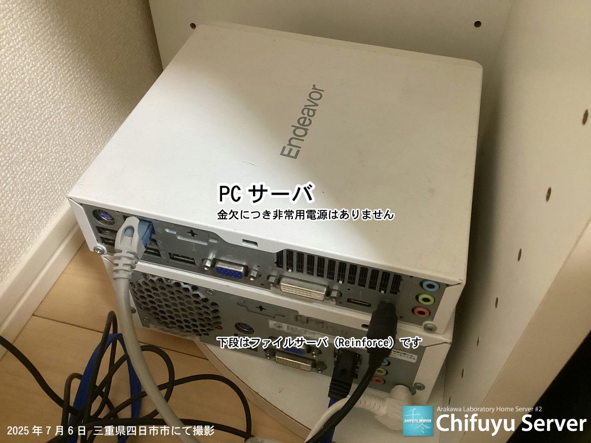

Chifuyu Server (千冬サーバ) は、Arakawa
Laboratoryが管理する自宅サーバです。
以下のページがChifuyu Server上で動作しています。
・ Chifuyu Server (このページ)
・ Shiori Server
・ Reinforce
・ スズキ エブリイワゴン DA64W
・ 三菱 ミニカ H42V
・ ホンダ スーパーカブ50プロ AA04
・ 荒川の同人活動
・ Misskey (mi.arkw.work)
・ オタ辞苑
| 2025/07/06 | リージョンを三重県四日市市に移転 |
|---|---|
| 2024/07/21 | OSとコンテナプラットフォームを更新 |
| 2024/07/06 | ドメイン期限切れに伴い「TVアニメ『おでかけ辞めますか? それとも人生辞めますか?』公式サイト」を停止 |
| 2024/01/20 | リージョンを愛知県岡崎市に移転 |
| 2023/10/24 | 「オタ辞苑」を公開 |
| 2023/07/22 | 「スズキ エブリイワゴン DA64W」のページを公開 |
| 2023/07/06 | 「TVアニメ『おでかけ辞めますか? それとも人生辞めますか?』公式サイト」を公開 |
| 2023/07/05 | ウェブサーバをDocker+Docker Composeへ移行 |
| 2023/07/04 |
トンネルソフトウェアをMyDNS.JPからCloudflare Tunnelに変更 Misskey (mi.arkw.work) 稼働開始 |
| 2023/06/21 | 「Reinforce」のページを公開 |
| 2022/08/01 | 「ホンダ スーパーカブ50プロ AA04」のページを公開 |
| 2022/07/23 | Chifuyu Serverの本運用を開始 |
EPSON Endeavor ST170E
| CPU | Intel Celeron 2950M (2.0GHz、2コア2スレッド) |
|---|---|
| RAM | 4GB |
| ストレージ | 120GB SSD |
| OS |
Rocky Linux 8.10 (2024/07/21～) Rocky Linux 8.6 (2022/07/23～2024/07/21) |
| コンテナプラットフォーム |
Docker 26.1.3 + Docker Compose 2.2.0 (2024/07/21～) Docker 24.0.2 + Docker Compose 2.2.0 (2022/07/23～2024/07/21) |
| SSLクライアント | Cloudflare SSL/TLS |
| トンネルソフトウェア | Cloudflare Tunnel |
| 継続的デプロイ | compose-cd 0.5.0 |
| リージョン |
三重県 四日市市 (2025/07/06～) 愛知県 岡崎市 (2024/01/20～2025/07/06) 静岡県 浜松市 (2022/07/23～2024/01/20) |


最終更新日 : 2025年7月6日
(c) 2022-2025 Sora Arakawa all rights reserved.